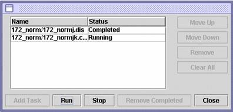

Automating Tasks
As your datasets get bigger, the time it will take to make all the necessary calculations will increase rapidly. Therefore, MAGIC Tool allows you to establish a list of tasks to be performed in sequence. You can tell MAGIC Tool to begin a series of steps and then walk away from your computer. MAGIC Tool will perform this sequence of tasks while you do other things. For example, you can establish a list of tasks to perform and go home for the night. When you return the next morning, MAGIC will have completed the series of tasks.
